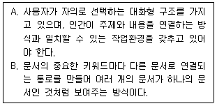
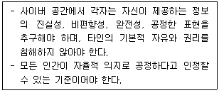
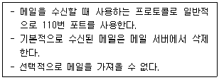
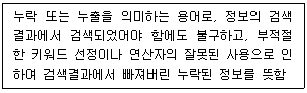
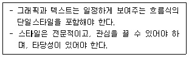
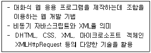
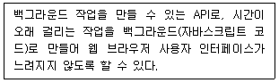
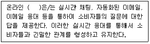
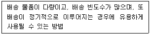

전자상거래운용사 (2020-10-18 기출문제)
1과목: 인터넷 일반
1. 다음 중 문서구조화를 위해 HTML5에서 새로 표준화한 태그로만 짝지어진 것은?
- <li>, <article>, <table>
- <main>, <meta>, <summary>
- <aside>, <ol>, <footer>
- <header>, <section>, <nav>
(정답률: 67%)

2. 다음 중 게시판 사용 시 지켜야 할 네티켓으로 가장 거리가 먼 것은?
- 게시판의 글은 명확하고 간결하게 작성한다.
- 인용된 정보를 인터넷에 게시할 때에는 출처를 밝힌다.
- 다른 사람이 올린 글에 대해 지나친 반박은 삼가야 한다.
- 게시물 내용의 사전 파악이 힘들도록 난해한 제목을 사용한다.
(정답률: 75%)
3. 다음 중 HTML5 표준에 따라서 HTML 페이지에 반드시 있어야 하는 요소가 아닌 것은?
- <head>
- <body>
- <!doctype html>
- <img>
(정답률: 69%)
4. 다음 중 정보 검색 시스템의 구조에 대한 설명으로 가장 거리가 먼 것은?
- 검색 효과 평가: 일반적으로 재현율과 정확률로 평가한다.
- 적합성 피드백: 질의와 문서 사이의 유사도를 수치화한 후 우선순위를 부여하여 결과를 제공하는 것이다.
- 질의 형식화: 사용자가 검색 요청한 자연어를 분석하여 검색 모듈의 특성에 부합하는 질의로 변환하는 것이다.
- 색인: 자동색인 기법을 통해 컴퓨터를 이용하여 문서와 질의를 자동적으로 분석함으로써 색인어를 추출하는 것이다.
(정답률: 46%)
5. 다음 글상자에서 설명하는 용어들을 가장 올바르게 짝지은 것은?

- A-하이퍼텍스트, B-하이퍼링크
- A-하이퍼미디어, B-하이퍼텍스트
- A-하이퍼링크, B-URL
- A-URL, B-하이퍼링크
(정답률: 61%)
6. 다음 중 웹디자인 도구인 “일러스트레이터”에 대한 설명과 가장 거리가 먼 것은?
- 비트맵 방식을 사용한다.
- CIP, 로고, 캐릭터, 심벌 등을 제작하기에 적합한 소프트웨어이다.
- 벡터 방식으로 데이터를 처리하여 정교한 도형을 그릴수 있다.
- 어도비시스템즈사에서 개발한 벡터 드로잉 프로그램이다.
(정답률: 64%)
7. 다음 중 웹 콘텐츠 접근성 지침 중에서 운용성에 해당하는 것으로 가장 올바른 것은?
- 웹 페이지의 탑재와 운용을 사용자가 의도하지 않은 기능이 실행되지 않도록 함
- 읽기 및 콘텐츠를 사용하는 사용자에게 충분한 시간을 제공해야 함
- 콘텐츠는 보조기술사용자가 맥락을 이해할 수 있도록 논리적인 순서로 제공해야 함
- 사용자 입력은 용도를 이해할 수 있도록 레이블을 제공해야 함
(정답률: 44%)
8. 다음 중 개발자 포맷을 그대로 출력하는 태그로 올바른 것은?
- <em>, </em>
- <h3>, </h3>
- <pre>, </pre>
- <mark>, </mark>
(정답률: 59%)
9. 다음 글상자가 설명하고 있는 정보화 사회에서의 인간완성에 기여할 수 있는 4가지 도덕적 원칙의 하나로 가장 올바른 것은?

- 해악금지
- 정의
- 책임
- 존중
(정답률: 45%)
10. 다음 글상자에서 설명하는 e-mail 프로토콜로 가장 올바른 것은?

- POP3
- SMTP
- MIME
- IMAP
(정답률: 63%)
11. 다음 글상자에서 설명하는 정보검색 관련 용어로 가장 올바른 것은?

- 불용어
- 리키지
- 시소러스
- 가비지
(정답률: 51%)
12. 다음 글상자에서 설명하는 상업용 웹사이트 디자인 관점으로 가장 올바른 것은?

- 가시도
- 콘텐츠
- 이용성
- 겉모습
(정답률: 48%)
13. 다음 중 네티켓의 사용 영역별 수칙에서 다른 컴퓨터사용(Telnet) 및 파일전송(FTP) 네티켓과 가장 거리가 먼 것은?
- 문서는 최소한 일주일에 한번 이상 갱신하고, 최신 수정일을 알려준다.
- 자료를 올릴 때는 동일한 파일이 있는지 살펴본다.
- 고의로 정보를 지우지 않는다.
- 문서 파일을 내려 받은 후에는 오프라인 상태에서 읽는다.
(정답률: 40%)
14. 다음 글상자에서 설명하는 용어로 가장 올바른 것은?

- SGML
- HTML5
- HTML
- AJAX
(정답률: 47%)
15. 다음 중 인터넷 보안에 대한 설명과 용어가 올바르게 짝지어진 것은?
- 데이터 무결성 - 자신의 신분을 증명하는 행위
- 인증 – 데이터의 내용이 정당하지 않은 방법에 의해 변경 또는 삭제되는 것을 방지하는 서비스
- 부인방지 - 네트워크를 통하여 비인가된 사용자, 주체, 여러 가지 불법적인 행위 및 처리등으로 내용이 노출되는 것을 방지하는 서비스
- 접근제어 - 비인가된 사용자의 위협으로부터 정보자원을 보호하는 것
(정답률: 56%)
16. 다음 중 웹디자인 시 범하기 쉬운 실수와 의미가 올바르게 짝지어진 것은?
- 유연성 없는 검색엔진 – 온라인용이 아닌 인쇄된 페이지 같은 형식의 텍스트 표기 방식
- 디자인의 일관성 미약 – 사이트 방문자들은 광고성내용을 거부하는 경향을 가지고 있음
- 텍스트 표기방법 – 특수문자, 하이픈, 복수형 등의 검색어를 인식하지 못하는 경우가 많고 검색 결과의 정확도가 떨어짐
- PDF 파일 – PDF 파일을 이용한 온라인 콘텐츠 제공은 내비게이션의 맥을 단절하게 함
(정답률: 45%)
17. 다음 글상자에서 설명하고 있는 HTML5의 기능으로 올바른 것은?

- 웹 소켓
- 웹 워커
- 캔버스
- SVG
(정답률: 47%)
18. 다음 중 개인정보 유형에서 소득정보에 해당하는 것들로 가장 올바른 것은?
- 보너스 및 수수료, 이자소득
- 소유주택, 사업소득
- 자동차와 기타소유차량, 보험
- 대부잔액 및 지불상황, 봉급경력
(정답률: 45%)
19. 다음 중 HTML에 관한 설명으로 가장 거리가 먼 것은?
- 태그는 대소문자 구분이 있다.
- 모양과 행동양식을 정해주는 명령어를 태그(Tag)라고 한다.
- 문자열 안이 아니라면 문서 내에서의 연속된 공백은 한 개의 공백과 같다.
- 태그는 일반적으로 <tag>, </tag>처럼 시작태그와 종료태그를 짝을 이루어 사용되지만 단독으로 사용되는 태그도 있다.
(정답률: 51%)
20. 다음 중 단어별 검색엔진의 단점에 대한 설명으로 가장 거리가 먼 것은?
- 원하는 정보를 찾을 때 여러 단계를 거쳐야 하는 불편함이 있고, 시간이 오래 걸린다.
- 광범위한 단어 입력 시 너무 많은 결과를 보여주므로 적절한 정보를 찾기 어렵다.
- 검색하는 단어가 정확하지 않으면 원하는 정보를 찾기 어렵다.
- 연산자 및 옵션에 대한 사전 지식을 갖추어야 검색엔진을 제대로 활용 가능하다.
(정답률: 39%)
2과목: 전자상거래 일반
21. 다음 중 새로운 제품이나 서비스를 빨리 수용하려는 경향을 나타내는 소비자 유형은?
- 혁신자
- 조기수용자
- 전기다수
- 후기다수
(정답률: 58%)
22. 다음 중 생산 지점으로부터 소비 또는 이용 지점까지 재화의 이동을 관리하는 것을 의미하는 용어로 가장 올바른 것은?
- 물류
- 조달
- 유통
- 회수
(정답률: 42%)
23. 다음 중 선별된 고객과 수익성 있고 장기적인 관계를 구축하여 고객의 평생가치를 증대하기 위한 것을 무엇이라고 하는가?
- CRM
- CEM
- KMS
- ERP
(정답률: 57%)
24. 다음 중 전자화폐의 도입 효과로 가장 올바르지 않은 것은?
- 고객 편리성 향상
- 화폐 효율성 제고
- 거래 안정성 제고
- 익명 보장성 향상
(정답률: 49%)
25. 다음 중 여러 광고를 하나의 배너에 차례로 바꿔가면서 나타내는 광고의 형태는?
- 고정형
- 키워드형
- 지정 시간형
- 로테이션형
(정답률: 54%)
26. 다음 시장세분화 기준 중에서 심리 분석적 변수가 아닌 것은?
- 개성
- 사회계층
- 상표 애호도
- 라이프스타일
(정답률: 41%)
27. 다음 중 소비자 측면의 전자상거래 장점이 아닌 것은?
- 상품의 정보를 쉽게 얻을 수 있음
- 정보탐색과 사전조사를 통해 계획구매 가능
- 가격경쟁으로 인해 저렴한 가격으로 구매
- 쌍방향 커뮤니케이션으로 고객 분석 가능
(정답률: 56%)
28. 다음 글상자의 괄호 안에 알맞은 용어는?

- 서비스
- 고객서비스
- 이벤트
- 제휴 프로그램
(정답률: 60%)
29. 다음 중 상품이나 서비스를 판매할 수 있도록 디지털 기술을 사용한다는 것을 의미하는 용어로 가장 올바른 것은?
- 마케팅
- e-마케팅
- e-SCM
- e-CRM
(정답률: 49%)
30. 다음 중 가맹점이 현저히 적고 결제 시 고객의 은행 계좌에서 실시간으로 대금이 인출되어 가맹점에 지급이 되는 은행의 전산망을 이용하여 거래를 하는 카드로 가장 올바른 것은?
- 전자화폐
- 신용카드
- 직불카드
- 체크카드
(정답률: 52%)
31. 다음 중 인터넷 마케팅의 장점으로 가장 올바르지 않은 것은?
- 경비를 줄일 수 있다.
- 쌍방향 의사소통이 가능하다.
- 시간과 공간의 제약을 극복할 수 있다.
- 유통 구조의 복잡화를 가져올 수 있다.
(정답률: 51%)
32. 다음 중 제품의 진부화로 제반 기능의 수행이 불가능하거나 기능수행 후 소멸을 목적으로 취하는 물류 유형은?
- 조달물류
- 폐기물류
- 생산물류
- 반품물류
(정답률: 55%)
33. 다음 중 사이트 구현 및 테스트 단계에서 가장 마지막에 수행이 되는 활동은?
- 기획 및 운영전략
- 검수 및 개발 완료
- 테스트 및 디버깅
- 웹페이지 디자인
(정답률: 45%)
34. 다음 중 소비자 주도 시장의 특징이 아닌 것은?
- 소비가 정보 가치를 갖는다.
- 서비스의 맞춤화가 이루어진다고 할 수 있다.
- 구입 전에 상호 커뮤니케이션이 이루어진다.
- 소비자가 공급자보다 시장의 주도권을 갖는다.
(정답률: 33%)
35. 다음 글상자에서 설명하고 있는 배송 시스템 유형은?

- 픽업 서비스
- 택배 서비스
- 생산자 집약형 배송시스템
- 프랜차이즈 방식에 의한 배송시스템
(정답률: 44%)
36. 다음 중 기업과 기업 사이에서 인터넷을 통해 다양한 거래를 처리하는 것을 의미하는 전자상거래 유형은?
- B2C
- C2B
- B2B
- B2G
(정답률: 58%)
37. 다음 중 가상공동체의 특성이 아닌 것은?
- 맞춤형 정보를 원한다.
- 익명성이 강하고 비대면성이 있다.
- 동기성과 비동기성을 함께 지니고 있다.
- 자신에게 맞지 않는 정보나 광고도 수용한다.
(정답률: 51%)
38. 다음 중 고객 개개인의 행동을 예측하기 위한 목적으로 활용이 되고 있는 기술로 가장 올바른 것은?
- 회귀분석
- 군집분석
- 데이터 마이닝
- 프로세스 마이닝
(정답률: 32%)
39. 다음 중 인터넷상에서 비용을 거의 들이지 않고 홍보할 수 있는 다양한 모든 방법을 의미하는 용어는?
- 쇼핑룸
- 스폰서십
- 인터스티셜
- 어나운스먼트
(정답률: 35%)
40. 다음 중 컴퓨터 통신망에서 상품이나 서비스의 구매, 수·발주, 광고 등 경제활동을 하는 것을 의미하는 용어로 가장 올바른 것은?
- 비즈니스
- 물류
- 전자상거래
- 조달
(정답률: 53%)
3과목: 컴퓨터 및 통신 일반
41. 다음 중 XML과 JSON을 비교한 것으로 가장 올바르지 않은 것은?
- 둘 다 계층적인 데이터 구조로 이루어져 있다.
- 둘 다 종료 태그를 사용하지 않는다.
- JSON 구문이 XML 구문보다 짧다.
- XML은 배열을 사용할 수 없다.
(정답률: 36%)
42. 지능형 지속 위협(APT: Advanced Persistent Threat) 공격에 대한 설명으로 가장 올바르지 않은 것은?
- 경제적인 목적을 위해 다양한 보안 위협들을 생산한다.
- 지속적으로 특정 대상에게 가하는 공격 기법이다.
- 사람의 실수나 부주의로 인한 공격은 해당되지 않는다.
- 표적으로 삼은 조직의 협력업체를 포함해 수개월에 걸쳐 공격 목표를 분석한다.
(정답률: 49%)
43. 다음 중 네트워크 관련 장비에 대한 설명으로 가장 올바르지 않은 것은?
- NIC - 정보 전송 시 케이블을 통해 전송될 수 있도록 정보 형태를 변경
- Router – 최적의 경로를 설정하며 데이터의 효율적인 전송을 위해 흐름을 제어
- Repeater – 디지털 신호의 재생이나 출력 전압을 높임
- Bridge – 리피터의 기능에 더해 서비스별로 분류시켜 포워딩을 결정
(정답률: 41%)
44. 다음 중 컴퓨터 네트워크 구성 요소의 예로 올바르게 연결되지 않은 것은?
- 송신자: 랜카드
- 데이터: 소리
- 전송 매체: 마이크로파
- 프로토콜: UTP(Unshielded Twisted Pair)
(정답률: 39%)
45. 다음 중 운영 체제의 종류별 설명으로 가장 올바르지 않은 것은?
- 도스(DOS): 텍스트 위주의 화면이며 멀티태스킹이 불가능하다.
- 윈도우(Windows): 사용자 친화적이나 서버를 띄울 수 없다.
- 유닉스(Unix): 시스템의 많은 부분이 표준 프로그래밍언어인 C언어로 작성되어 있다.
- 리눅스(Linux): 프로그램 소스 코드가 공개되어 있어 다양한 배포판이 존재한다.
(정답률: 41%)
46. 다음 중 클라우드 서비스로 제공되는 형태에 대한 설명으로 가장 올바르지 않은 것은?
- IaaS - 서버, 소프트웨어, 데이터 저장공간과 같은 인프라 상품을 제공한다.
- PaaS – 개발, 테스트, 배포 등과 같은 플랫폼 서비스를 제공한다.
- SaaS – 서비스 개발에 필요한 도구들을 제공하여 서비스 구성에 도움을 준다.
- AIaaS – 이미 구현된 AI 서비스를 API 형태로 가져다 쓸 수 있다.
(정답률: 33%)
47. 다음 중 바이러스의 형태와 설명이 가장 올바르지 않은 것은?
- 암호형 바이러스: 바이러스 코드를 암호화한 바이러스로 메모리에 올라가는 과정에서 암호화가 풀린다.
- 은폐형 바이러스: 바이러스에 감염된 파일들이 일정기간 잠복기를 가지도록 만든다.
- 매크로 바이러스: 매크로 실행 기능이 있는 워드나 엑셀파일에 감염된다.
- 매크로 바이러스: 실행할 수 있는 파일이 아니므로 백신에 의해 탐지되지는 않는다.
(정답률: 42%)
48. 다음 중 콘텐츠 전송 네트워크(CDN)에 대한 설명으로 가장 올바른 것은?
- CDN 서비스는 캐시 서버에서 미리 저장한 콘텐츠를 사용자와 가까운 곳에 위치한 캐시 서버에서 콘텐츠를 공유해 대신 응답을 주는 기술이다.
- CDN 서비스는 최초 요청 시에도 캐시 서버를 통해 사용자에게 데이터를 제공한다.
- CDN 서비스는 모든 페이지에 대해 CDN 장비에서 캐싱이 된다.
- CDN을 사용해도 서버의 트래픽 부하나 비용은 동일하나, 사용자에게 빠른 서비스 제공이 가능하며 장애확률을 낮출 수 있다.
(정답률: 32%)
49. 다음 중 컴퓨터의 물리적 구성요소가 아닌 것은?
- Processor
- RAM
- Process
- Network Interface Controller
(정답률: 39%)
50. 다음 중 무선 통신 5G(IMT-2020)에 대한 설명으로 가장 올바르지 않은 것은?
- 전송속도가 20Gbps로 4G보다 20배 빠르다.
- 지연시간은 1ms로 초저지연이 가능하다.
- 에너지 효율성은 4G보다 낮은 편이다.
- 이동 속도는 500km/h까지 지원한다.
(정답률: 39%)
51. 다음 중 바이러스 치료를 위해 취해야 하는 행동으로 가장 올바르지 않은 것은?
- 백신 소프트웨어 설치 후 성능향상을 위해 실시간 감시기능은 설정하지 않는다.
- 백신 소프트웨어를 설치하고 주기적으로 검사한다.
- 백신 소프트웨어를 항상 최신버전으로 업데이트 한다.
- 백신 소프트웨어는 부팅 시 항상 같이 시작되도록 설정한다.
(정답률: 51%)
52. 다음 중 버스(bus)에 대한 설명으로 가장 올바르지 않은 것은?
- 컴퓨터 내부나 외부의 각 장치 간 정보나 신호를 주고 받는 전기적 통로이다.
- USB, PCI, ISA 등이 해당된다.
- 시스템 병목 현상이 발생할 수 있다.
- 단위 시간 당 처리할 수 있는 데이터의 양이 무한에 가깝다.
(정답률: 39%)
53. 다음 중 운영체제의 기능과 설명이 올바르게 연결된 것은?
- 프로세스 관리 – 프로그램과 데이터를 불러내 프로세스를 만듦
- 프로세스 관리 – 명령이나 데이터를 변환하여 실행하고 결과를 출력
- 네트워크 관리 – 여러 개의 요청 중에서 하나만 중앙처리 장치에서 처리되고 나머지는 실행 순서를 스케줄링
- 메모리 관리 – 보조기억장치에 주소를 부여하여 필요한 파일을 저장 관리
(정답률: 26%)
54. 다음 중 각 프로토콜에 대한 설명으로 가장 올바르지 않은 것은?
- TCP/IP는 인터넷 표준 프로토콜로 서로 다른 운영체제를 사용하는 컴퓨터 간에도 데이터를 전송할 수 있다.
- FTP는 인터넷을 통해 서로 파일을 전송하는데 사용되는 프로토콜로 대용량의 파일을 다운받거나 보낼 수 있다.
- HTTP는 웹 서버와 웹 브라우저 간의 프로토콜이다.
- HTTPS는 TLS를 사용해 암호화된 연결을 하는 HTTP이며 포트 주소는 HTTP와 공유하여 사용한다.
(정답률: 36%)
55. 다음 중 IP 주소 체계에 관한 설명으로 올바르지 않은 것은?
- IPv4 주소는 32비트로 구성되어 있으며 약 42억개의 서로 다른 주소를 부여할 수 있다.
- IPv6 주소는 256비트로 구성되어 있으며 최대 1조개 이상의 주소를 부여할 수 있다.
- IPv4 주소 표현의 예로 255.255.255.255를 들 수 있다.
- IPv6 주소 표현의 예로 ffff:::::::ffff를 들 수 있다.
(정답률: 33%)
56. 다음 중 DNS에 대한 설명으로 가장 올바르지 않은 것은?
- 호스트 주소에 대한 이름 주소 변환을 위한 데이터베이스 시스템이다.
- 계층 구조로 이루어져 있으며 중앙 집중화된 시스템이다.
- 하나의 영문 이름에 여러 개의 IP 주소를 집합시킬 수 있다.
- 도메인 이름 공간, 네임서버, 변환기로 구성되어 있다.
(정답률: 32%)
57. 다음 중 캐시에 대한 설명으로 가장 올바르지 않은 것은?
- 중앙처리장치의 주요 구성 요소이다.
- 한번 활용한 데이터를 저장해 놓는다.
- 메인 메모리보다 빠르다.
- 데이터를 불러들이는 시간을 단축하기 위해 사용한다.
(정답률: 39%)
58. 다음 중 인터넷 통신에서 사용되는 주소로 올바르지 않은 것은?
- URL - http://q-net.or.kr
- PORT - 80
- IP – 192.168.20.1
- MAC – FF:FF:FF:FF
(정답률: 40%)
59. 다음 중 중앙처리장치에 대한 설명으로 가장 올바른 것은?
- 제어장치는 일종의 계산기로 모든 산술 및 논리와 관련된 연산을 수행
- 연산장치는 레지스터를 사용하여 연산을 수행
- 레지스터는 제어장치, 연산장치, 주기억장치에서 일어나는 모든 연산 및 출력을 제어
- 캐시는 데이터 및 명령어를 임시로 저장하기 위해 사용되는 저장소
(정답률: 31%)
60. 다음 중 컴퓨터 시스템 용어에 대한 설명으로 올바르지 않은 것은?
- 프로세스: 주기억 장치에 적재되어 실행 중인 프로그램
- 스케줄링: 컴퓨터의 모든 자원에 대한 사용 순서를 결정하는 것
- 가상 메모리: 프로그램을 보조기억장치에 두고 필요한 경우에 프로그램 일부만 주기억 장치로 이동시켜 실행하는 방식
- 멀티태스킹: 여러 대의 컴퓨터로 작업을 동시에 처리하거나 프로그램을 동시에 실행하는 기능
(정답률: 32%)